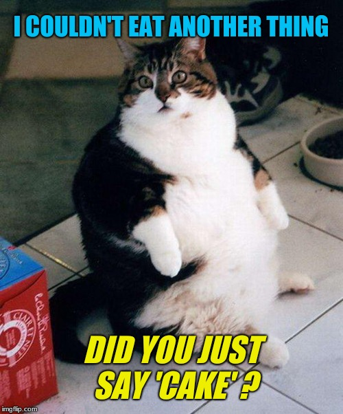
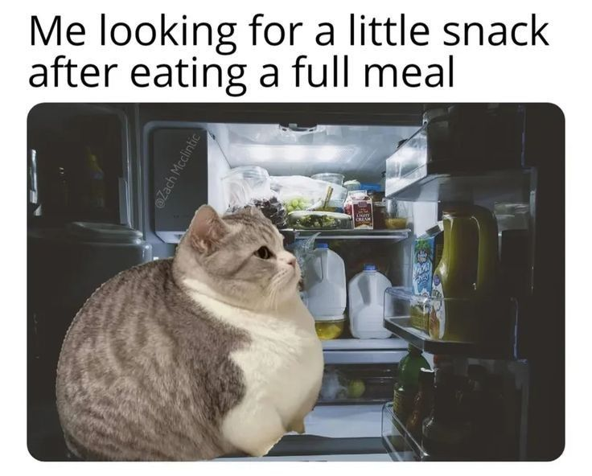
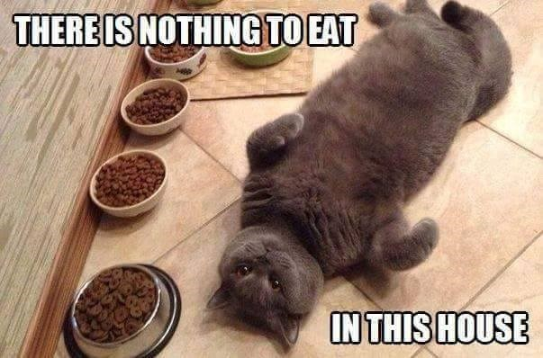
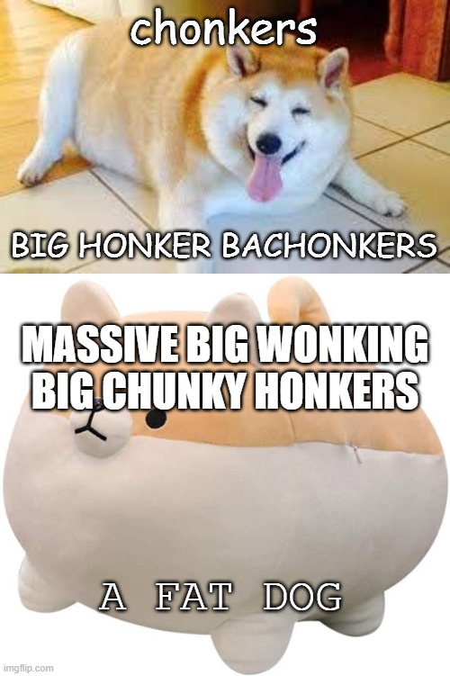
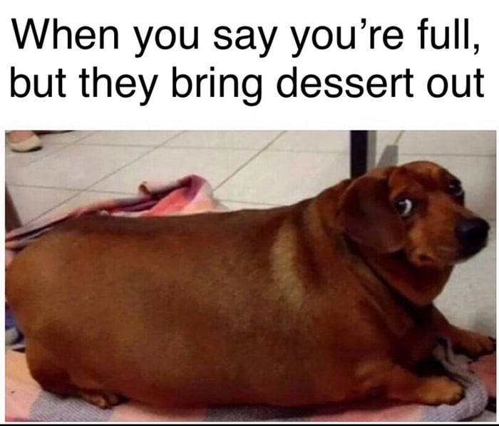
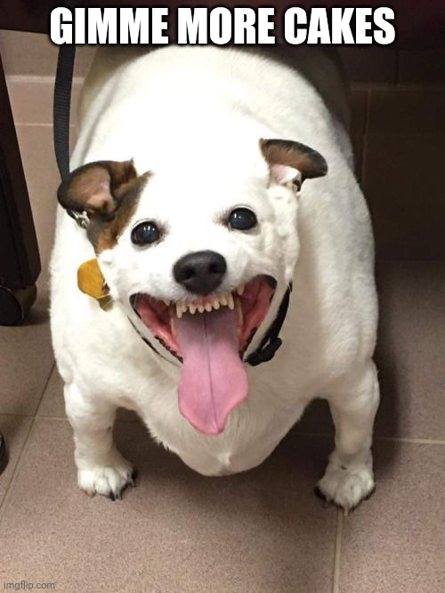

01
Торт меняет всё
Кот
МОЙ ВАРИАНТ ПОДПИСИ
«Я больше не могу. А, вы про торт?»
Выразительная поза: удобно оставить кота слева от КБЖУ.
Imgflip ↗6 найденных мемов про еду. Нажмите на картинку, чтобы рассмотреть её.
Русские подписи ниже — мои предложения для будущей карточки.

«Я больше не могу. А, вы про торт?»
Выразительная поза: удобно оставить кота слева от КБЖУ.
Imgflip ↗
«Норму съел. Теперь бы перекусить.»
Сюжет про холодильник; лучше работает целой фотографией.
Cheezburger ↗
«Пять мисок. Ноль подходящих вариантов.»
Смешная ситуация; миски важны для смысла мема.
Cheezburger ↗
«Это не лишнее. Это запас на потом.»
Круглый силуэт хорошо узнаётся даже маленьким.
Imgflip ↗
«Я сыт. Но десерт — отдельный вопрос.»
Взгляд назад хорошо передаёт реакцию на еду.
9GAG ↗
«Моя дневная норма: ещё.»
Самая гротескная морда; для более абсурдного юмора.
Imgflip ↗Ссылки ведут к найденным публикациям. Изображения показаны целиком, с исходными подписями и отметками авторов. Это подборка референсов; макеты приложения не изменены.